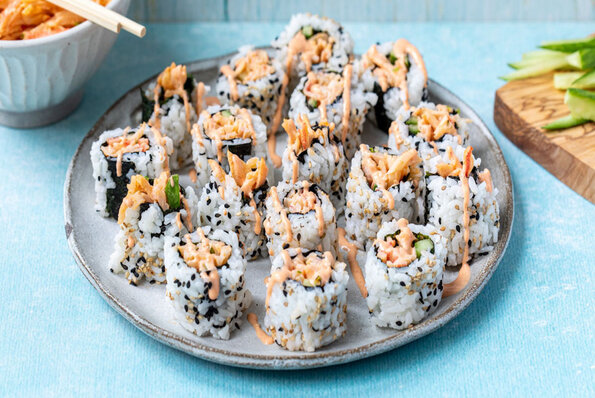

Cream Cheese and Crab Sushi Rolls

Description
Sushi is a Japanese dish of prepared vinegared rice usually with some sugar and salt, accompanied
by a variety of ingredients, such as seafood, often raw, and vegetables. Styles of sushi and its
presentation vary widely, but the one key ingredient is "sushi rice", also referred to as shari,
or sumeshi. Sushi is traditionally made with medium-grain white rice, though it can be prepared
with brown rice or short-grain rice. It is very often prepared with seafood, such as squid, eel,
yellowtail, salmon, tuna or imitation crab meat. Many types of sushi are vegetarian. It is often
served with pickled ginger (gari), wasabi, and soy sauce. Daikon radish or pickled daikon (takuan)
are popular garnishes for the dish
This crab sushi roll with imitation crabmeat recipe is delicious and surprisingly simple to make.
Sushi is expensive to buy at the supermarket, so making your own will save you tons of money.
I make this all the time.
Ingredients
- 1 cup uncooked white rice
- 2 cups water
- 2 tablespoons rice vinegar
- 1 teaspoon salt
- 2 sheets nori seaweed sheets
- ¼ cucumber, peeled and sliced lengthwise
- 2 pieces imitation crab legs
- ½ (3 ounce) package cream cheese, sliced
- 1 teaspoon minced fresh ginger root
Steps
- Bring rice and water to a boil in a saucepan over high heat. Reduce heat to medium-low, cover,
and simmer until the rice is tender, and the liquid has been absorbed, 20 to 25 minutes. Stir
in rice vinegar and salt. Allow to cool completely.
- Lay out seaweed sheets. Moisten hands with water, then spread cooled rice evenly on each sheet,
leaving a 1/2-inch gap along one edge, lengthwise. Arrange strips of cucumber, imitation crabmeat,
and cream cheese on top of the rice in a straight line along the side opposite the gap. Roll up
sushi from the toppings to the seaweed sheet's exposed end.
- Using a sharp wet knife, slice each roll into 5 or 6 pieces. Serve with minced ginger on the side.
Click Here to Go Back